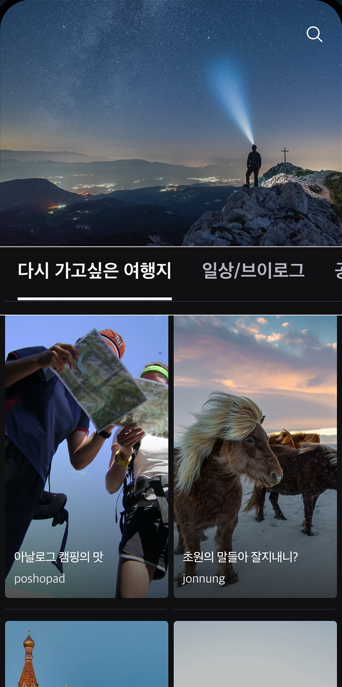
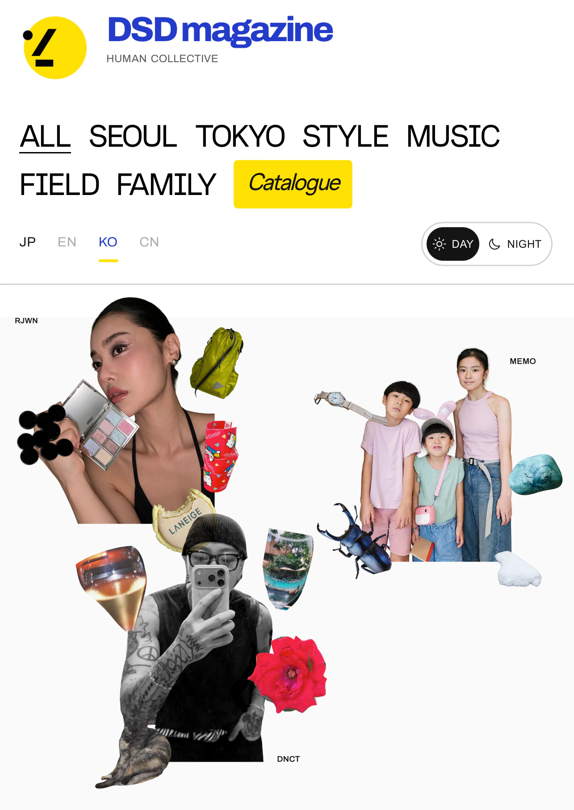
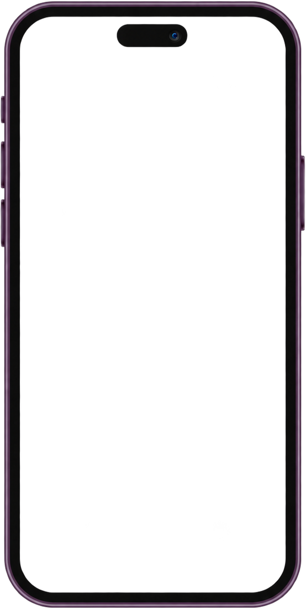
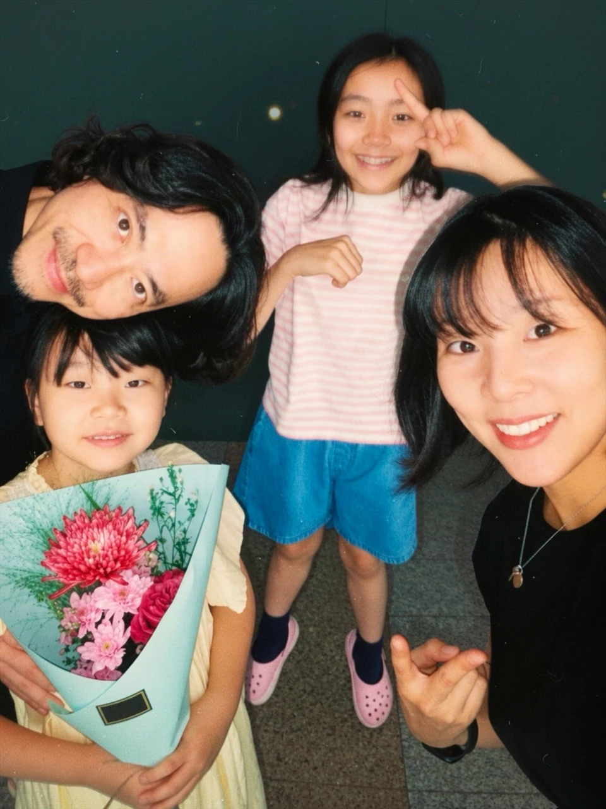
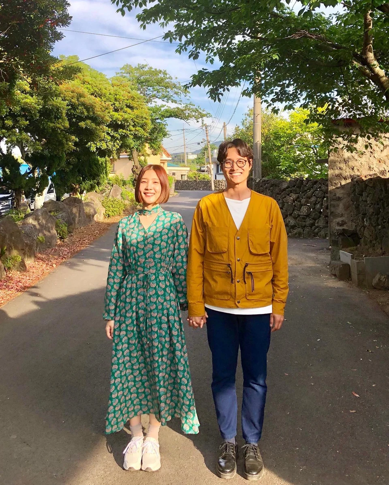

닷슬래시대시가 새로운 여정을 시작합니다.
기억하고 싶은 순간을 모으던 곳에서,
사람들의 일상을 담는 매거진으로.



DSD magazine
기록은 계속됩니다.
매일의 장면에서 오래 간직하고 싶은 순간을 발견하는 일.
닷슬래시대시는 그 시선을 새로운 매거진으로 이어갑니다.


어떤 하루를 보내고,
무엇을 좋아하나요?
한국과 일본에서 자신만의 취향으로 살아가는 사람들을 만납니다. 자주 입는 옷 한 벌, 오래 쓴 도구 하나에도 그 사람의 이야기가 있습니다.
SEOUL TOKYO
새로운 서비스 준비 중
Independent voices.
Shared perspective.
독립적인 목소리,
함께 만드는 시선.
한국과 일본을 연결하는 새로운 매거진을 준비하고 있습니다.